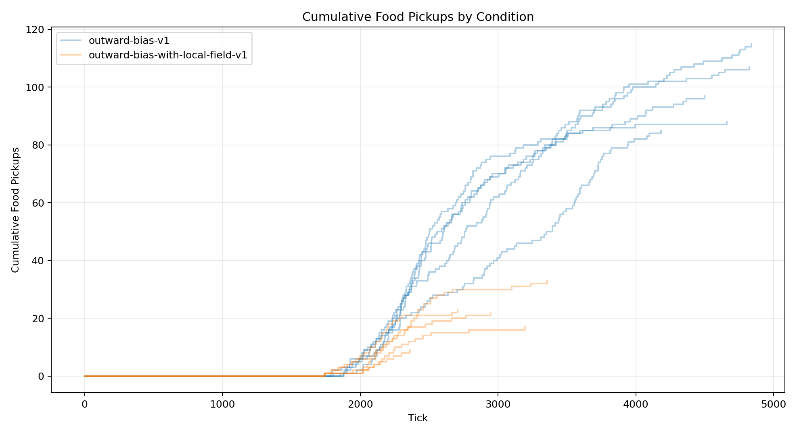
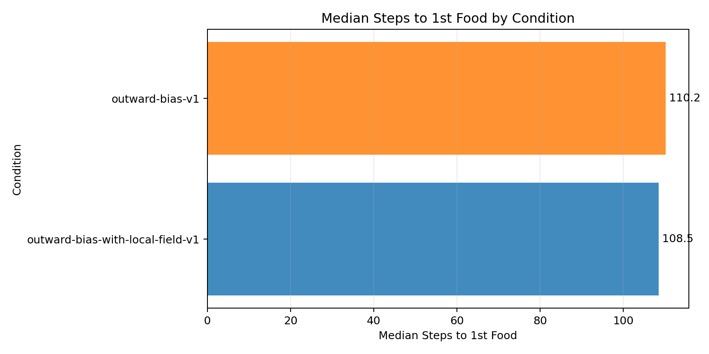
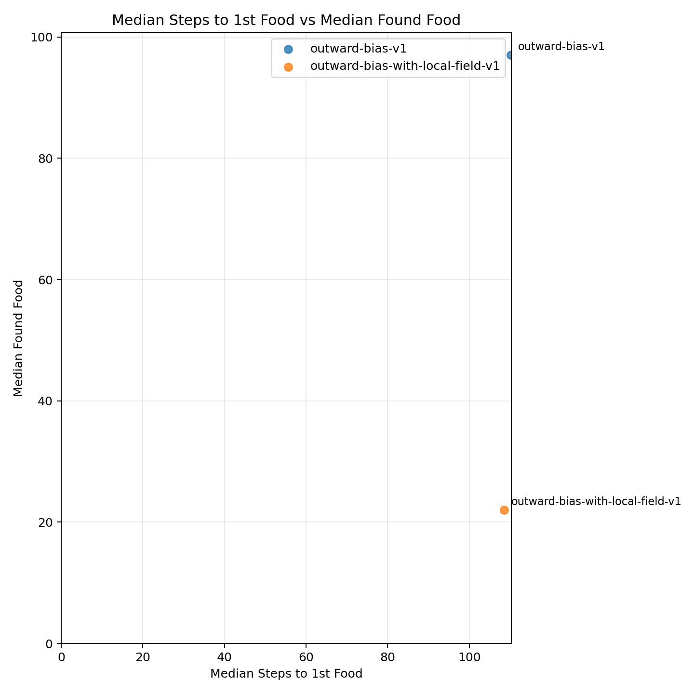
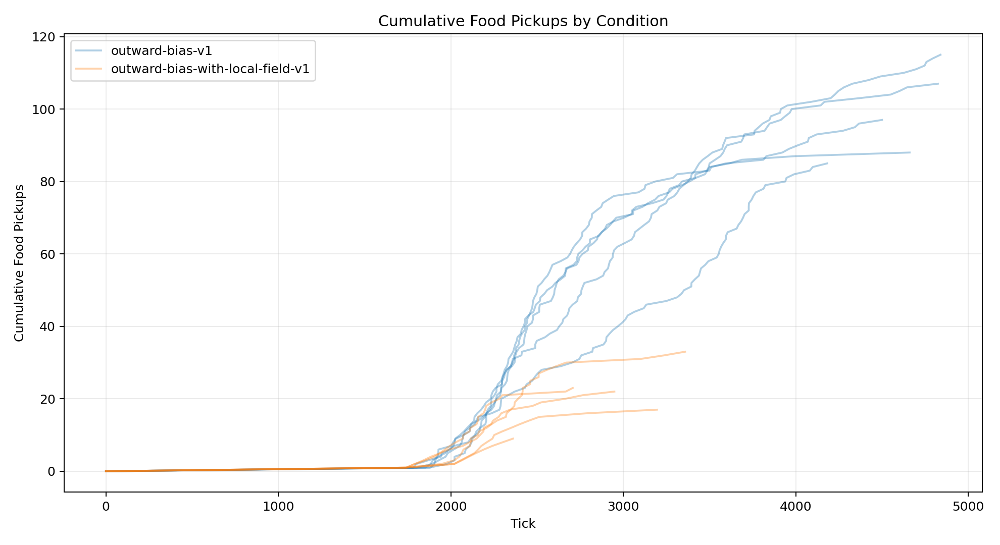
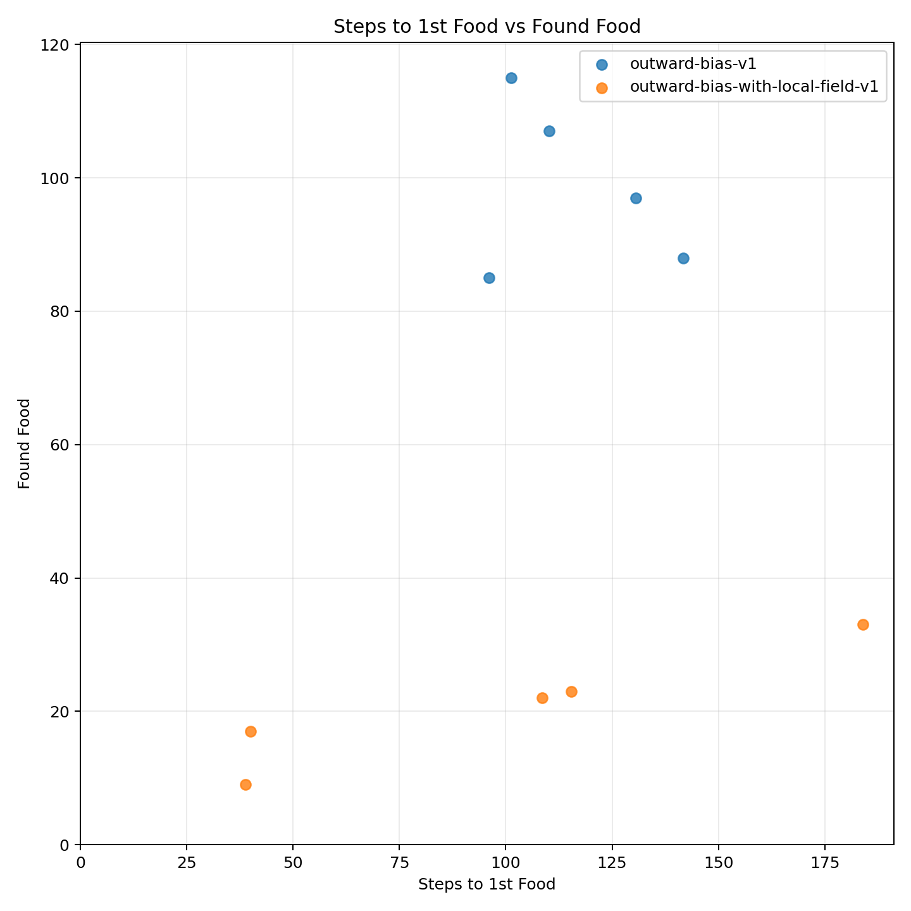
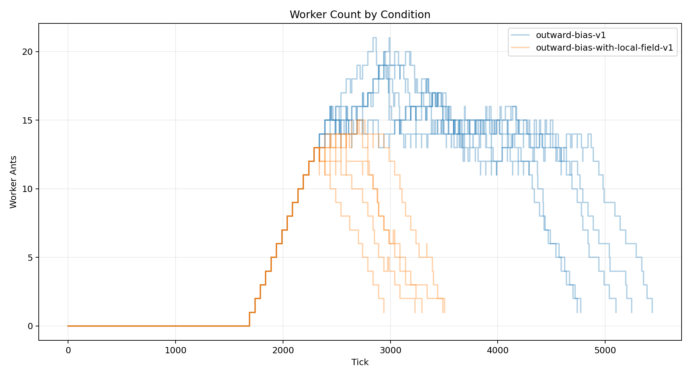

| Condition | Runs |
|---|---|
| outward-bias-v1 | 5 |
| outward-bias-with-local-field-v1 | 5 |
| Metric | Conditions | Min | Max | Average | Median | Mode |
|---|---|---|---|---|---|---|
| analysis.delivered_food | 2 | 20.600 | 93.400 | 57 | 57 | none |
| analysis.delivered_food_per_day | 2 | 0.568 | 1.811 | 1.190 | 1.190 | none |
| analysis.final_day | 2 | 35.400 | 51.400 | 43.400 | 43.400 | none |
| analysis.final_tick | 2 | 3481.200 | 5102.800 | 4292 | 4292 | none |
| analysis.found_food | 2 | 20.800 | 98.400 | 59.600 | 59.600 | none |
| analysis.selected_move_count | 2 | 12887.200 | 39278.200 | 26082.700 | 26082.700 | none |
| analysis.simulation_length | 2 | 1797.200 | 3418.800 | 2608 | 2608 | none |
| analysis.steps_to_nth_food.1 | 2 | 97.330 | 115.955 | 106.642 | 106.642 | none |
| analysis.steps_to_nth_food.10 | 2 | 26.667 | 69.125 | 47.896 | 47.896 | none |
| analysis.steps_to_nth_food.11 | 2 | 65.667 | 115.333 | 90.500 | 90.500 | none |
| analysis.steps_to_nth_food.12 | 2 | 28 | 43 | 35.500 | 35.500 | none |
| analysis.steps_to_nth_food.13 | 2 | 38 | 44.667 | 41.333 | 41.333 | none |
| analysis.steps_to_nth_food.14 | 1 | 49.500 | 49.500 | 49.500 | 49.500 | none |
| analysis.steps_to_nth_food.2 | 2 | 32.347 | 72.283 | 52.315 | 52.315 | none |
| analysis.steps_to_nth_food.3 | 2 | 30.217 | 77.945 | 54.081 | 54.081 | none |
| analysis.steps_to_nth_food.4 | 2 | 30.533 | 73.544 | 52.039 | 52.039 | none |
| analysis.steps_to_nth_food.5 | 2 | 25.800 | 46.616 | 36.208 | 36.208 | none |
| analysis.steps_to_nth_food.6 | 2 | 32.875 | 51.933 | 42.404 | 42.404 | none |
| analysis.steps_to_nth_food.7 | 2 | 42.625 | 53.047 | 47.836 | 47.836 | none |
| analysis.steps_to_nth_food.8 | 2 | 23.625 | 77.633 | 50.629 | 50.629 | none |
| analysis.steps_to_nth_food.9 | 2 | 54.750 | 96 | 75.375 | 75.375 | none |
| analysis.steps_to_nth_queen.1 | 2 | 21.777 | 53.657 | 37.717 | 37.717 | none |
| analysis.steps_to_nth_queen.10 | 2 | 20.167 | 25.667 | 22.917 | 22.917 | none |
| analysis.steps_to_nth_queen.11 | 2 | 37.500 | 88 | 62.750 | 62.750 | none |
| analysis.steps_to_nth_queen.12 | 2 | 22 | 29.333 | 25.667 | 25.667 | none |
| analysis.steps_to_nth_queen.13 | 2 | 20 | 26.667 | 23.333 | 23.333 | none |
| analysis.steps_to_nth_queen.14 | 1 | 48 | 48 | 48 | 48 | none |
| analysis.steps_to_nth_queen.2 | 2 | 29.360 | 38.751 | 34.056 | 34.056 | none |
| analysis.steps_to_nth_queen.3 | 2 | 21.567 | 43.404 | 32.485 | 32.485 | none |
| analysis.steps_to_nth_queen.4 | 2 | 21.267 | 35.141 | 28.204 | 28.204 | none |
| analysis.steps_to_nth_queen.5 | 2 | 19.700 | 32.007 | 25.853 | 25.853 | none |
| analysis.steps_to_nth_queen.6 | 2 | 24.180 | 26 | 25.090 | 25.090 | none |
| analysis.steps_to_nth_queen.7 | 2 | 19.500 | 28.400 | 23.950 | 23.950 | none |
| analysis.steps_to_nth_queen.8 | 2 | 21.375 | 43.400 | 32.388 | 32.388 | none |
| analysis.steps_to_nth_queen.9 | 2 | 50.625 | 72.750 | 61.688 | 61.688 | none |
| day | 2 | 35.400 | 51.400 | 43.400 | 43.400 | none |
| delivered_food | 2 | 20.600 | 93.400 | 57 | 57 | none |
| egg_hatched | 2 | 20 | 56.400 | 38.200 | 38.200 | none |
| egg_laid | 2 | 20 | 56.400 | 38.200 | 38.200 | none |
| eggs | 2 | 0 | 0 | 0 | 0 | 0 |
| found_food | 2 | 20.800 | 98.400 | 59.600 | 59.600 | none |
| players | 2 | 0 | 0 | 0 | 0 | 0 |
| queens | 2 | 1 | 1 | 1 | 1 | 1 |
| randomized_seed | 2 | 1777222015701.400 | 1777222178920.200 | 1777222097310.800 | 1777222097310.800 | none |
| simulation_length | 2 | 1797.200 | 3418.800 | 2608 | 2608 | none |
| start_tick | 2 | 1684 | 1684 | 1684 | 1684 | 1684 |
| tick | 2 | 3481.200 | 5102.800 | 4292 | 4292 | none |
| workers | 2 | 0 | 0 | 0 | 0 | 0 |
| world.height | 2 | 274 | 274 | 274 | 274 | 274 |
| world.width | 2 | 160 | 160 | 160 | 160 | 160 |





